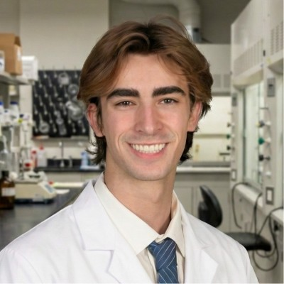

Engineering methods to model, infer, and control complex systems. Working at the intersection of electrical
engineering, applied machine learning, and neuroscience.
About

I'm a sophomore at MIT studying Computation and Cognition (6-9) and
Mathematics (18). My work centers on using mathematical approaches to
model and control complex systems, with a particular focus on neural
engineering.
I fell in love with systems thinking at age seven, when I first learned
to program. That curiosity eventually led me to cybersecurity, where I
found something deeply satisfying about reverse-engineering a
black-boxed system under tight constraints on observability and
perturbation. When I started undergrad, I decided to channel that same
fascination into neuroscience, which remains one of the least
understood yet most consequential dynamical systems we know of.
I previously worked in Ed Boyden's Synthetic Neurobiology Group, where
I applied reinforcement learning to computational protein design,
generating novel optogenetic protein variants. I later left academic
research to co-found Ambient Labs, a hardware startup building
radar-based systems for wireless, contactless monitoring of biometrics
and sleep quality.
In spring 2026, prompted by recent advances in the field, I paused my
radar work to focus entirely on non-invasive brain-computer interfaces.
I'm now building the first iteration of a next-generation consumer
neural interface based on functional ultrasound.
Work and Research
Ambient Labs
Co-founder and engineering lead · Nov 2025 – Apr 2026
Led end-to-end development of a mmWave radar system (TI IWR6843AOP)
for contactless physiological monitoring, achieving ±1 BPM
respiration and ±2–3 BPM heart-rate accuracy at 30 Hz
without wearables.
Engineered real-time embedded inference pipelines with <30 ms
latency on-device, operating under <200 mW power and sub-MB
memory constraints.
Designed a diffusion-based radar point-cloud model for
through-obstruction pose estimation, achieving sub-centimeter
resolution and >90% accuracy across diverse bedding conditions.
Synthetic Neurobiology Group
Undergraduate researcher · Jan – Sep 2025
Designed, constructed, and validated AAV-delivered optogenetic
circuits (ChR2-derived) for targeted neuronal control, demonstrating
light-evoked modulation of motor circuit activity in vitro and in
vivo (mouse) via calcium imaging and behavioral assays.
Developed a reinforcement learning framework for protein design
leveraging pretrained protein language models, optimizing
sequence–structure mappings over 104+ candidates
under functional and safety constraints for neuromodulation
applications.
Publications
Emergent High-SINR Neural Decoding via Massive Ensembling of Diverse Weak Experts
Baxter Barlow, Simon Kern, Gordon Feld · ICLR 2027 (under review)
Proposes a novel method of low-SNR neural decoding as
population-level inference: class-discriminative signal is recovered
from deviations around the ensemble mean, rather than from individual
predictions or constructive ensembling.
Achieved 53% accuracy in low-SNR imagined imagery classification,
vastly outperforming previous state-of-the-art accuracy of 18%.
Credentials
Education
MIT, B.S. in Computation and Cognition + Mathematics, expected June
2028.
GPA: 5.0
Coursework: Systems Neuroscience, Neural Computation and
Neurophysiology, Probability Theory, Statistical Inference, Real
Analysis, (Graduate) Signal Processing, Systems and Control
Theory, Analog Electronics Design.
Recognition
2026 YC x MIT IAP pre-accelerator
2nd Place at the 2026 E14 Beyond the Lab Hackathon
EPOCH Fellowship nominee
$10k+ in bug bounties for security research across JetBlue, Reddit, BeReal, College Board, and others
3rd Place in the 2022 Congressional App Challenge
Technical profile
I tend to do my best work where embedded systems, signal processing,
scientific validation, and machine learning all need to coexist in the
same stack.
Embedded and real-time inference pipelines
Signal-processing workflows tied to hardware realities
Diffusion models for radar point-cloud estimation
Reinforcement learning for constrained search
Ensembling and low-SNR neural decoding
Optogenetic circuit design, calcium imaging, and assays
Probability, statistical inference, and signal processing
Security research and adversarial debugging discipline